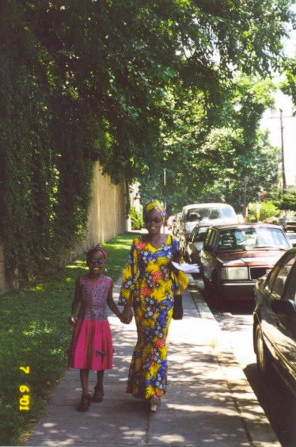

Originally from Lusaka Zambia, I have lived in the U.S., Tunisia, Egypt and France. I consider myself a global citizen but first and foremost I am Zambian. As I complete this step in my studies I feel it is important for me to understand what it means to be an African artist or designer and what obstacles I may face with that identity.
This semester I am focusing on contemporary African art and design and their place in the West. With this thesis project I hope to create an initiative that will help to promote them. For my first approach I am putting on a series of workshops, one of which I have already completed. These workshops focus primarily on African artists, techniques and materials, giving attendees a chance to learn about the artists and create their own works in a similar style or with the same materials. The goal of these workshops would be to encourage a greater appreciation for contemporary African art and design and the traditions it stems from.

Me and my mum 7|6|01